Data-element per l’asseverazione PNRR¶
I data-element sono attributi che il validatore automatico di AgID cerca nelle pagine del sito per le verifiche PNRR. In io-Comune si impostano dall’interfaccia redazionale, scegliendoli da un elenco di valori predefiniti. Questa pagina spiega dove inserirli, sezione per sezione.
Pagina Argomenti¶
La pagina di disambiguazione “Argomenti” deve contenere un blocco elenco con tutti gli argomenti disponibili, a cui va associato il data-element topic-element.
Posizionarsi sulla pagina “Tutti gli argomenti…”, cliccare l’icona di modifica in alto nella barra laterale di sinistra e selezionare il blocco elenco.
Nella barra laterale di destra selezionare il data-element
topic-elemente salvare.
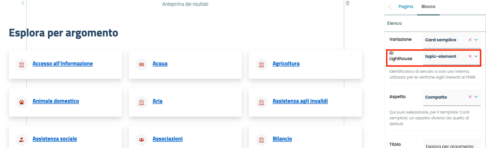
Pagina Servizi¶
La pagina di disambiguazione “Servizi” deve contenere un blocco elenco con almeno 10 servizi e un secondo blocco elenco con tutte le categorie di servizio attive. A ciascun blocco va associato un data-element specifico.
Posizionarsi sulla pagina “Servizi”, cliccare l’icona di modifica in alto nella barra laterale di sinistra e selezionare il primo blocco elenco, quello con l’anteprima dei servizi.
Nella barra laterale di destra selezionare il data-element
service-linke salvare.
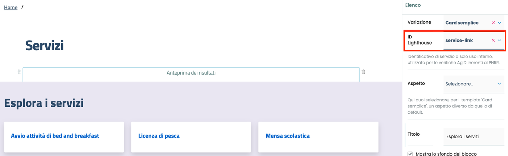
Ripetere l’operazione sul secondo blocco elenco, quello con le categorie di servizio, selezionando il data-element
service-category-link.
Più di 10 schede servizio¶
Se le schede servizio pubblicate sono più di 10, il validatore deve poterle leggere tutte. Serve quindi una pagina che le mostri tutte, senza paginazione:
Creare una pagina generica “Tutti i servizi” dentro la sezione “Servizi”. Il suo indirizzo sarà
https://<nome_sito>/servizi/tutti-i-servizi.Prima di pubblicarla, escluderla dalla navigazione.
Inserire nella pagina un blocco elenco con variazione Card semplice, ID lighthouse
service-linke criterio Tipo di contenuto uguale a Servizio. Impostare i risultati per pagina uguali al numero di schede pubblicate, così che non ci sia paginazione.
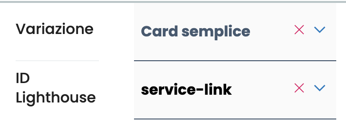
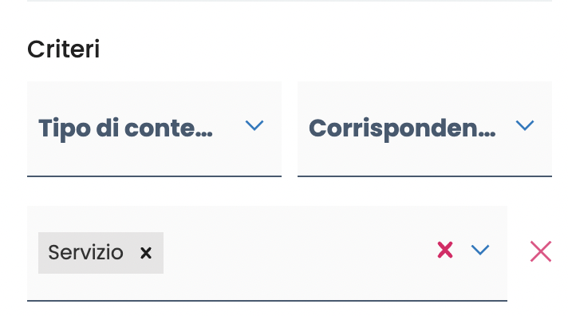
Nella sezione “Servizi” (
https://<nome_sito>/servizi/) inserire un link alla pagina “Tutti i servizi”, con il data-elementpager-link.
Altre pagine di secondo livello¶
Ogni pagina di disambiguazione deve contenere un blocco elenco con tutte le voci di secondo livello attive nella sezione. Per impostare il data-element: posizionarsi sulla pagina, cliccare l’icona di modifica in alto nella barra laterale di sinistra, selezionare il blocco elenco e scegliere il data-element nella barra laterale di destra; poi salvare.
Pagina |
Blocco |
data-element |
|---|---|---|
Amministrazione |
Blocco elenco con le voci di secondo livello |
|
Novità |
Blocco elenco con le voci di secondo livello |
|
Eventuali pagine aggiuntive di primo livello |
Blocco elenco con le voci di secondo livello |
|
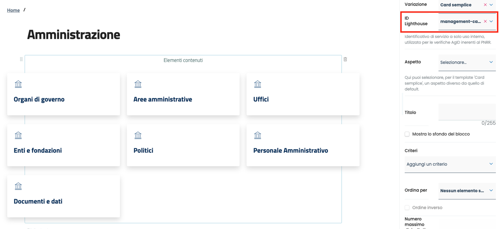
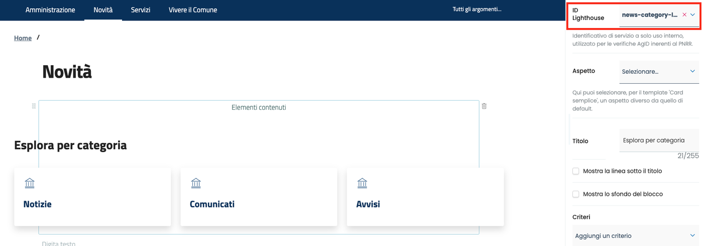
Vivere il Comune¶
La pagina “Vivere il Comune” deve contenere due blocchi elenco, uno con gli eventi e uno con i luoghi in evidenza. Entrambi devono avere un bottone con il link alla relativa sezione e il suo data-element.
Posizionarsi sulla pagina, cliccare l’icona di modifica e selezionare il blocco elenco degli eventi in evidenza.
Nella barra laterale, nella sezione Link ad altro, selezionare il data-element
live-button-eventse salvare. Il bottone deve portare alla pagina con l’elenco di tutti gli eventi.
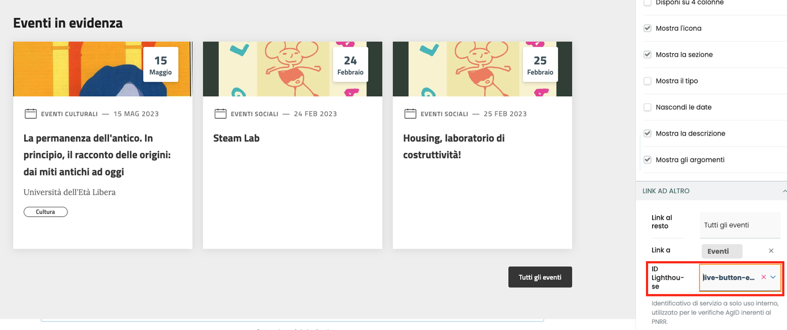
Ripetere l’operazione per il blocco dei luoghi in evidenza, con il data-element
live-button-locations. Il bottone deve portare alla pagina con l’elenco di tutti i luoghi.
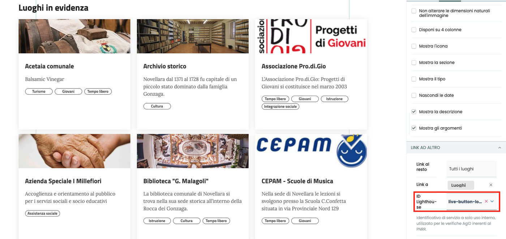
Area personale¶
Il data-element personal-area-login viene inserito automaticamente quando si attiva l’area riservata.
Note legali¶
La pagina Note legali deve contenere un paragrafo sulla licenza dei contenuti.
Cliccare l’icona di modifica in alto nella barra laterale di sinistra e inserire, nel punto desiderato, un blocco HTML.
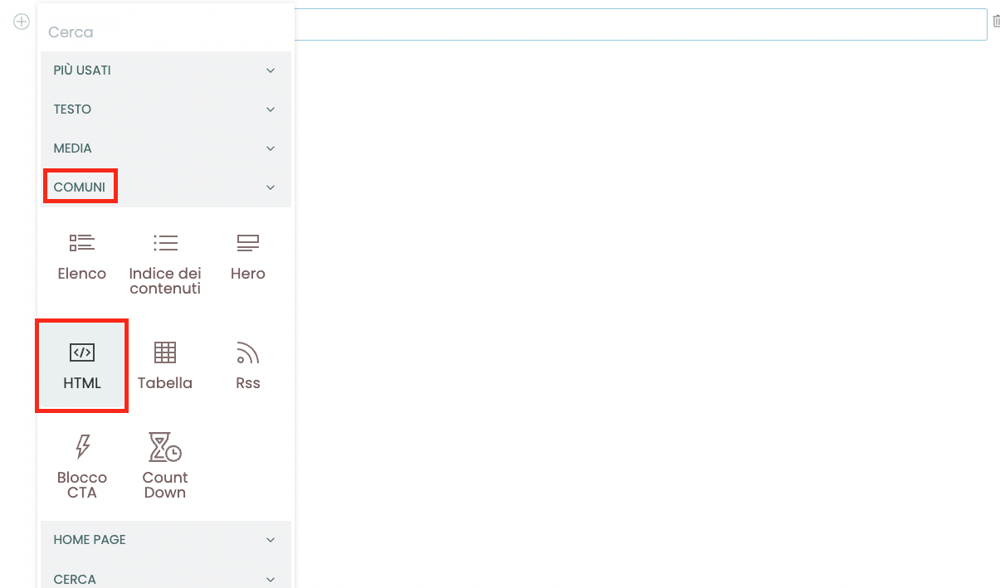
Incollare questo codice:
<h3 data-element="legal-notes-section">Licenza dei contenuti</h3>
<p data-element="legal-notes-body">
In applicazione del principio open by default ai sensi dell’articolo 52 del decreto legislativo 7 marzo 2005, n. 82 (CAD) e salvo dove diversamente specificato (compresi i contenuti incorporati di terzi), i dati, i documenti e le informazioni pubblicati sul sito sono rilasciati con licenza CC-BY 4.0. Gli utenti sono quindi liberi di condividere (riprodurre, distribuire, comunicare al pubblico, esporre in pubblico), rappresentare, eseguire e recitare questo materiale con qualsiasi mezzo e formato e modificare (trasformare il materiale e utilizzarlo per opere derivate) per qualsiasi fine, anche commerciale con il solo onere di attribuzione, senza apporre restrizioni aggiuntive.
</p>
Salvare la pagina.
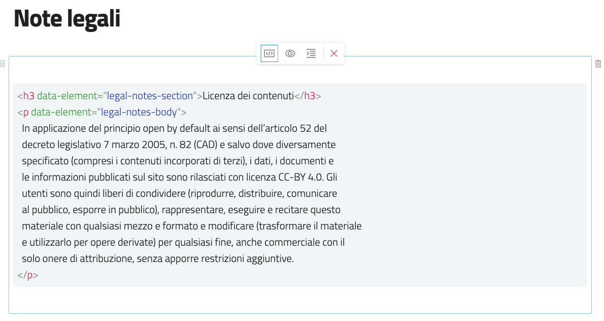
Scheda servizio¶
I data-element dell’indice della scheda servizio sono già integrati nel template: non serve nessun intervento redazionale.
Se il servizio prevede la prenotazione online di un appuntamento, il link verso io-Prenoto o verso il servizio di prenotazione dell’Ente deve avere il data-element appointment-booking:
Posizionarsi sulla scheda servizio e cliccare l’icona di modifica in alto nella barra laterale di sinistra.
Nella sezione Accedere al servizio, campo Prenota un appuntamento, scrivere il testo “Prenota appuntamento”.
Selezionare il testo con il mouse, cliccare l’icona del link, inserire l’indirizzo del sistema di prenotazione e selezionare il data-element
service-booking-access.
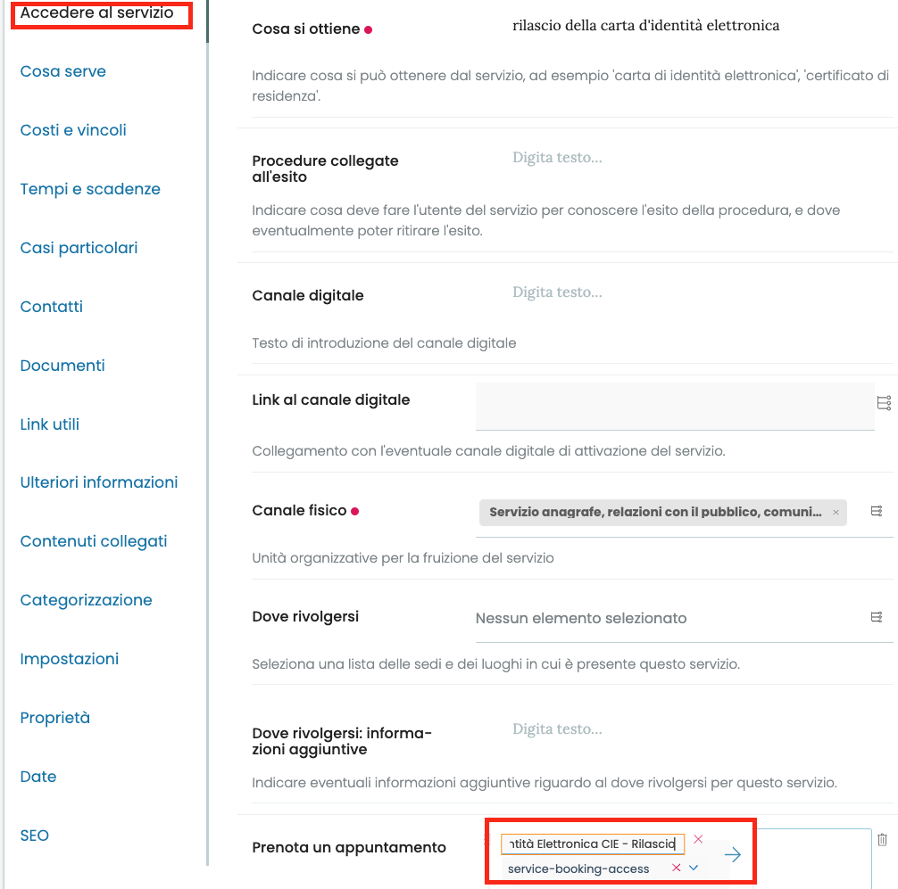
Verifica delle buone pratiche¶
Una vista apposita elenca i contenuti a cui mancano campi che AgID indica come obbligatori. Oltre alle schede servizio, controllate in automatico dallo strumento “pa-website-validator”, sono essenziali anche le buone pratiche per l’asseverazione.
Dalla vista ogni redattore vede tutti i contenuti da rivedere; cliccandone uno si apre il contenuto, pronto per essere modificato. I contenuti vengono raggruppati per cartella di appartenenza e spariscono dall’elenco man mano che vengono completati.
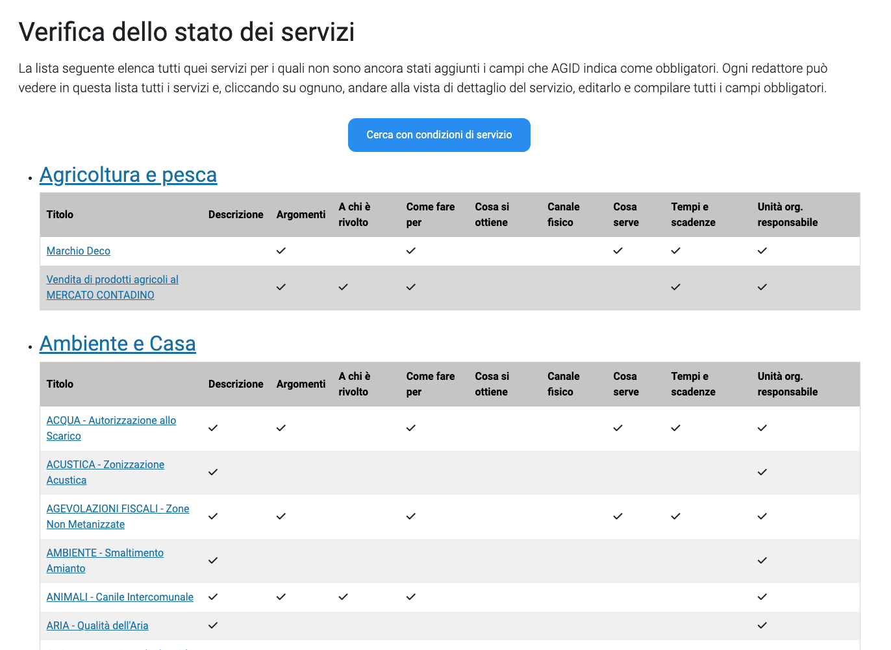
Nota
Non è possibile salvare una scheda servizio, o un altro contenuto, finché non sono compilati tutti i campi obbligatori.
Per aprire la vista, autenticarsi e andare a uno di questi indirizzi:
https://<nome_sito>/admin/check-servizi[1]https://<nome_sito>/admin/check-notiziehttps://<nome_sito>/admin/check-eventihttps://<nome_sito>/admin/check-luoghihttps://<nome_sito>/admin/check-documentihttps://<nome_sito>/admin/check-uohttps://<nome_sito>/admin/check-persone